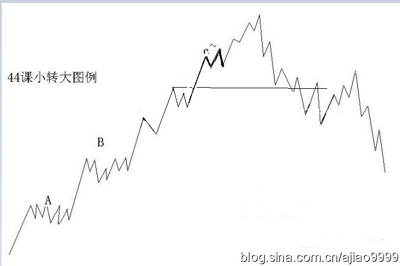
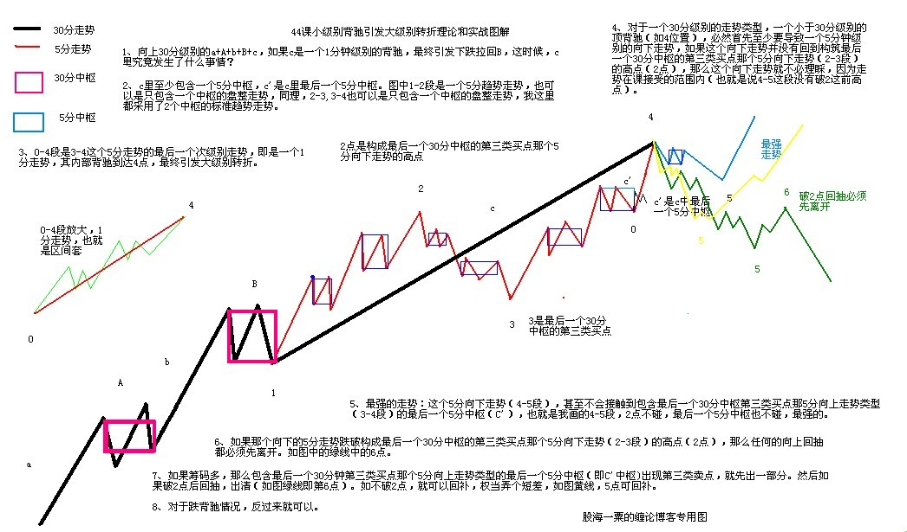

|
 |
教你炒股票44：小级别背驰引发大级别转折
有了上一课，对“背驰级别等于当下的走势级别”这最一般的情况，应该是很好把握了，唯一可能出现困难的，就是“背驰级别小于于当下的走势级别”这种情况，也就是所谓的小级别转折引发大级别转折，对这种情况，还要进行进一步的分析。
还是用上次的例子，向上30分钟级别的a+A+b+B+c，如果c是一个1分钟级别的背驰，最终引发下跌拉回B里，这时候，c里究竟发生了点什么事情？
首先，c至少要包含一个5分钟的中枢，否则，中枢B就不可能完成，因为这样不可能形成一个第三类的买点。
不妨假设c`是c中最后一个5分钟的中枢，显然，这个1分钟的顶背驰，只能出现在c`之后，而这个顶背驰必然使得走势拉回c`里，也就是说，整个运动，都可以看成了围绕c`的一个震荡，而这个震荡要出现大的向下变动，显然要出现c`的第三类卖点，因此，对于那些小级别背驰后能在最后一个次级别中枢正常震荡的，都不可能转化成大级别的转折，这个结论很重要，所以可以归纳成如下定理：
缠中说禅小背驰-大转折定理：
小级别顶背驰引发大级别向下的必要条件是该级别走势的最后一个次级别中枢出现第三类卖点；
小级别底背驰引发大级别向上的必要条件提是该级别走势的最后一个次级别中枢出现第三类买点。
（注：换个说法：小级别顶背驰引发大级别向下，那么，该级别走势的最后一个次级别中枢出现一定出现第三类卖点；如果该级别走势的最后一个次级别中枢出现出现第三类卖点，小级别顶背驰不一定引发大级别向下。小级别底背驰反过来就是）
注意，关于这种情况，只有必要条件，而没有充分条件，也就是说不能有一个充分的判断使得一旦出现某种情况，就必然导致大级别的转折。小级别顶背驰后，最后一个次级别中枢出现第三类卖点并不一定就必然导致大级别的转折。在上面的例子里，并不必然导致走势一定回到最后的该级别中枢B里。
显然，这个定理比起“背驰级别等于当下的走势级别”必然回来最后一个该级别中枢的情况要弱一点，但这是很正常的，因为这种情况毕竟少见点而且要复杂得多。因此，在具体的操作中，必须有更复杂的程序来对付这种情况。而对于“背驰级别等于当下的走势级别”，如果你刚好是该级别为操作级别的，只要在顶背驰时直接全部卖出就可以。
（买卖）
对于“背驰级别小于当下的走势级别”的情况，为了简单起见，不妨还是用上面的为例子。
如果一个按30分钟级别操作的投资者，那么，对于一个5分钟的回调，是必然在其承受的范围之内，否则可以把操作的级别调到5分钟。那么，对于一个30分钟的走势类型，一个小于30分钟级别的顶背驰，必然首先至少要导致一个5分钟级别的向下走势，如果这个向下走势并没有回到构成最后一个30分钟中枢的第三类买点那个5分钟向下走势类型的高点，那么这个向下走势就不必要理睬，因为走势在可接受的范围内。当然，在最强的走势下，这个5分钟的向下走势，甚至不会接触到包含最后一个30分钟中枢第三类买点那5分钟向上走势类型的最后一个5分钟中枢，这种情况就更无须理睬了。如果那向下的5分钟走势跌破构成最后一个30分钟中枢的第三类买点那个5分钟回试的5分钟走势类型的高点，那么，任何的向上回抽都必须先离开。
（娇加：缠中说禅走势类型分解原则：一个某级别的走势类型中，不可能出现比该级别更大的中枢，一旦出现，就证明这不是一个某级别的走势类型，而是更大级别走势类型的一部分或几个该级别走势类型的连接。）
娇注：跌破那个高点后会扩展成更大级别日中枢--进行时非完成时。根据定理，原30分走势类型结束，所以先离开。)
以上这种是全仓操作的处理方法，如果筹码较多，那么当包含最后一个30分钟中枢第三类买点那5分钟向上走势类型的最后一个5分钟中枢出现第三类卖点，就必须先出一部分，然后在出现上一段所说的情况时在出清。当然，如果没有出现上一段所说的情况，就可以回补，权当弄了一个短差。
（娇：线段背驰转5分级别看线段背驰点后1分下走势出现1分3卖先卖出一部分，然后看1分下走势完成时能否碰到前5分3买高点，不碰到买回。碰到后在随后的向上反抽中出清-----还原课文分段递归级别）
有人可能问，为什么那1分钟背驰的时候不出去，这是与你假定操作的级别相关的，而走势不能采取预测的办法，这是不可靠的，由于没有预测，所以不可能假定任何1分钟顶背驰都必然导致大级别的转折，其实这种情况并不常见，你不可能按30分钟操作，而一见到1分钟顶背驰就全部扔掉，这就变成按1分钟级别操作了。如果你的资金量与操作精度能按1分钟操作，那就没必要按30分钟操作，而按1分钟操作，操作的程序和按30分钟的是一样的，不过相应的级别不同而已。
当然，对于有一定量的资金来说，即使按30分钟操作，当见到1分钟的顶背驰时，也可以把部分筹码出掉，然后根据后面的回调走势情况决定回补还是继续出，这样的操作，对一定量的资金是唯一可行的，因为这种资金，不可能在任何一定级别的卖点都全仓卖掉。至于底背驰的情况，将上面的反过来就可以。
(娇：小转大实盘注意点1 本级别或者次级别中枢反向突破；2 次级别中枢出现3买卖；3 本级别3买转2卖，3卖转2买；4 调整或者反抽的位置超过正常最后个次级别走势的的位置到达第二个中枢GGDD--形成同分3买卖的高低点从而扩展大中枢前走势类型结束。）
(娇注：小转大：
注意点1：小级别背驰引发大级别转折可以转2级，转3级，转4级.....原理相同。看被转折可能这个级别的次级别中枢有无出现3买卖，以及回调位置是否到次级别第二个中枢。比如1分背驰转5分级别就看最后个1分中枢的3买卖，1分背驰转30分级别就看最后个5分中枢的3买卖。
注意点2：这个该级别走势最后个次级别中枢是动态的，不一定为小级别背驰点前的中枢。
注意点3：本课文讲解为为1分钟背驰转30分钟级别转3级，43课举例601588为1分钟背驰转5分钟级别转2级------非分段后递归级别）


缠中说禅：
2007-04-10
15:25:20
昨天说了，由于中石化等业绩很好，大盘股是压不住了，那些说现在市赢率如何如何的人，算一下中石化现在是多少？且不说今年依然可以高速增长。其实探讨这些没什么意义，只是汉奸总是拿这些说事，不妨也说说。
缠中说禅：
2007-04-10
15:32:00
[匿名] 小丸子
缠中说禅：
2007-04-10
15:37:11
[匿名] 缠心雕龙
缠中说禅：
2007-04-10
15:41:00
[匿名] 后知后觉
缠中说禅：
2007-04-10 15:51:41
[匿名] 新浪网友
缠中学缠：
2009-09-09
01:25:44
复习到此，先留个脚印.
缠中说禅：
2007-04-11
15:38:12
前两天经常说中石化，就如同过年前经常说联通，后面经常说中行一般，由此，这剧本的有趣地方，应该有点感觉了。汉奸原来不是很多工行要打压吗？那他们现在能对工行干点什么呢？把工行打压下5元？拉起来？现在中行已经成龙头了，看看两者的差价。其实，现在大盘的走势，就是一个现场直播，就那几只大盘股票，对指数起着关键作用，如何应用，什么时候用什么，大家应该好好体会，从过年前开始，慢慢体会，这样会学到点东西。
缠中说禅：
2007-04-11 15:48:48
[匿名] 新浪网友
缠中说禅：
2007-04-11
15:50:26
[匿名] 乐土
缠中说禅：
2007-04-11
15:51:58
[匿名] 小八
缠中说禅：
2007-04-11
15:54:39
[匿名] 小丸子
缠中说禅：
2007-04-11
15:56:49
[匿名] hehe2
缠中说禅：
2007-04-11
15:59:05
[匿名] 百思不解 （注：缠中说禅走势类型分解原则：一个某级别的走势类型中，不可能出现比该级别更大的中枢，一旦出现，就证明这不是一个某级别的走势类型，而是更大级别走势类型的一部分或几个该级别走势类型的连接。小级别背驰后回跌，一旦碰到包含大级别中枢3买的的GG,同级别分解的角度，中枢就要扩展，原走势结束，必须先离开）
缠中说禅：
2007-04-11
16:02:12
[匿名] 水房姑娘
缠中说禅：
2007-04-11
16:12:11
[匿名] 缠心雕龙
缠中说禅：
2007-04-11
16:13:54
[匿名] 幼稚园 ]
缠中说禅：
2007-04-11
16:22:30
[匿名] touchnet （娇注：不一定） （娇注：不对）
缠中说禅：
匿名] 白玉兰
缠中说禅：
2007-04-11
16:30:32
[匿名] asdf
缠中说禅：
2007-04-11
16:38:49
[匿名] II
缠中说禅：
2007-04-11 16:47:16
[匿名] 麒麟 |
|
|
|